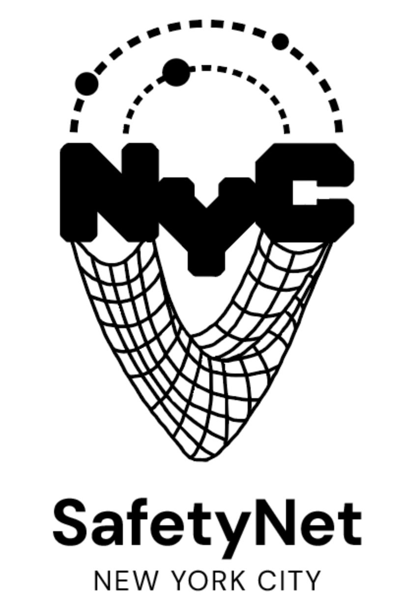
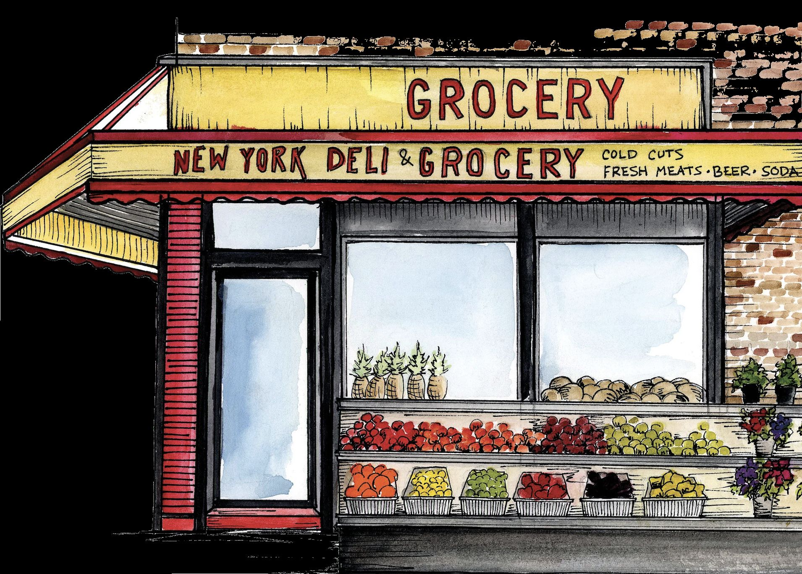
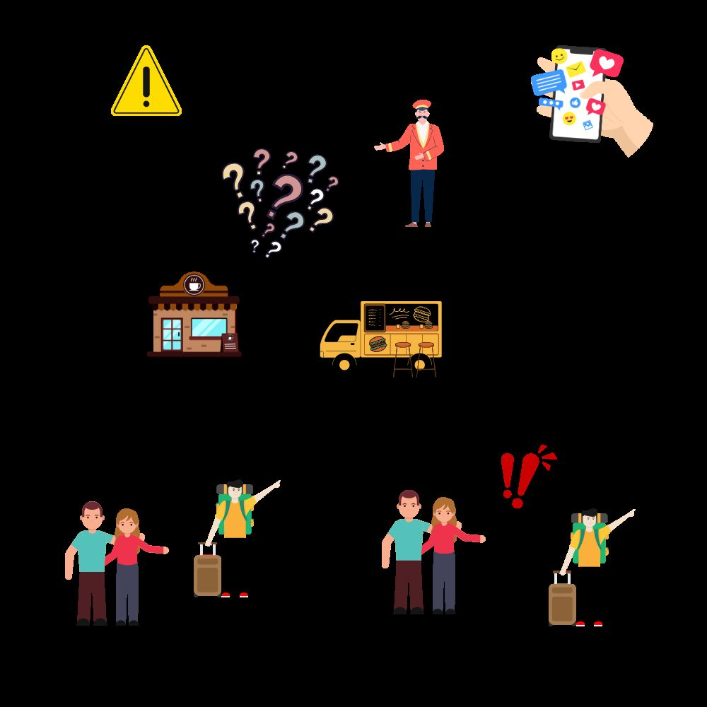
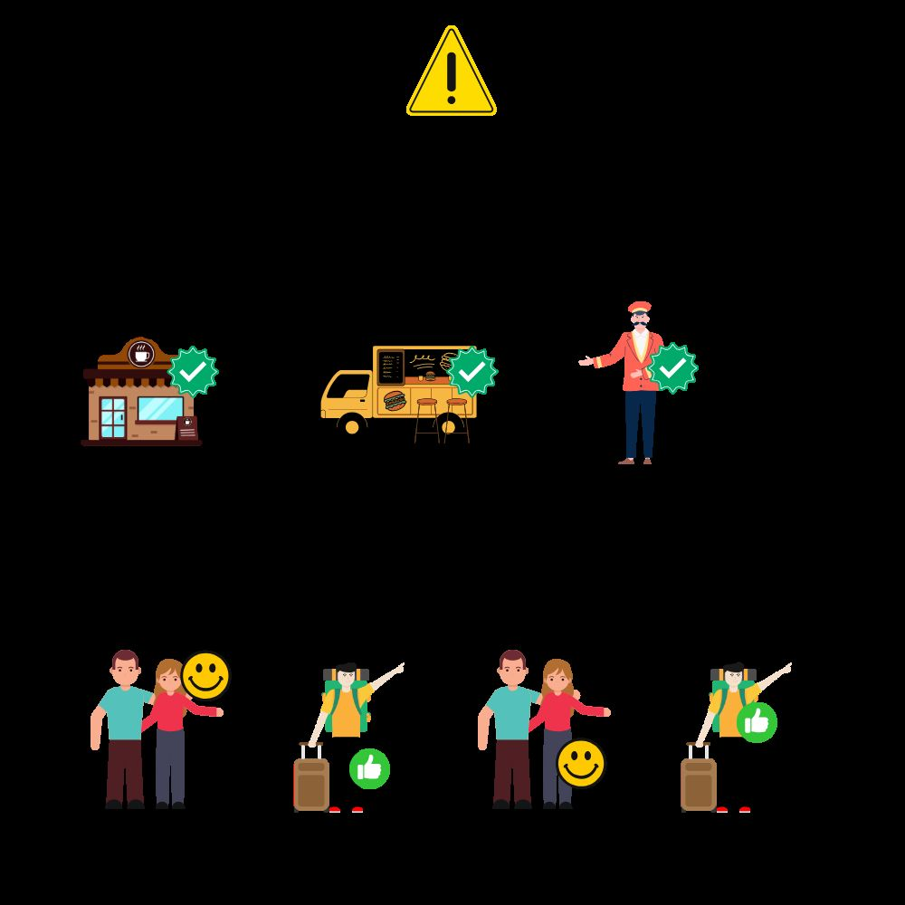
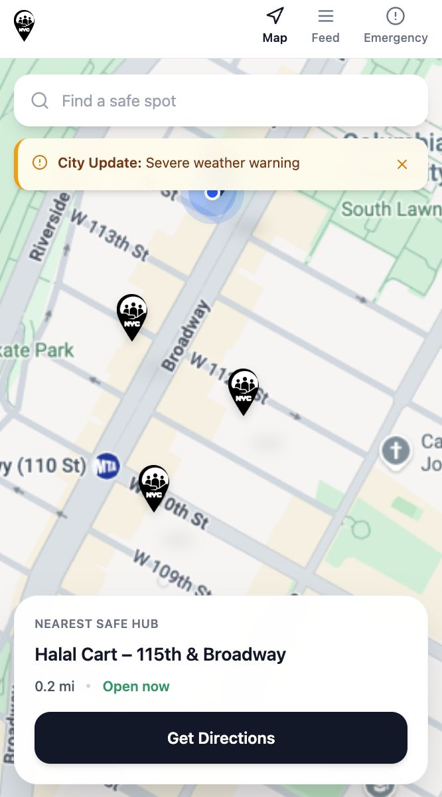
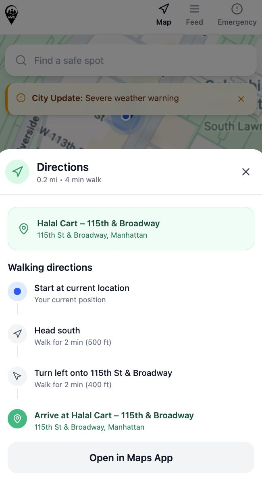
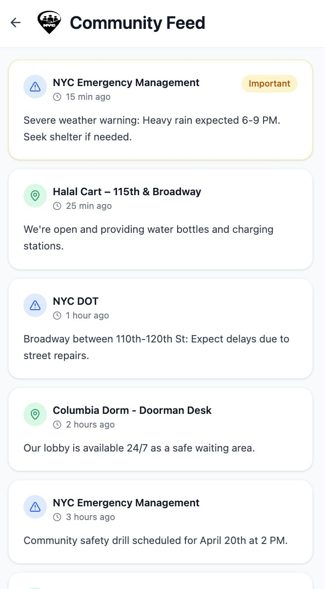

Formalizing New York City's existing disaster communication network — the bodega, the halal cart, the doorman.
Emergency communication in NYC relies on centralized infrastructure — alerts, apps, broadcasts. But these systems assume stable signal, consistent digital access, and a common language. During a crisis, they often break down exactly when they're needed most.
Meanwhile, an informal system already exists and quietly functions. Bodegas stay open through storms. Halal cart operators know their block. Doormen have residents' trust built over years. New Yorkers have always known who to turn to — they just haven't had a way to find them during a disaster.
"There is information, but it's not reliable or clear enough to act on."
— Patrick, Queens resident, interviewed during research
The unofficial anchor of NYC neighborhood life"I love my customers. I want to protect them — and I appreciate being someone they can turn to during danger."
Kareem, Owner — Hooda Halal, W 115th St & Broadway
The informal trust network already exists across every NYC neighborhood. Our research confirmed that local vendors, shop owners, and building staff naturally step into supportive roles during emergencies — across languages, backgrounds, and income levels. The gap isn't motivation. It's structure, visibility, and connection to official information.
Students, tourists, and recent arrivals who lack local knowledge and trusted networks during emergencies. Surveyed across 12 newcomers — they consistently reported not knowing where to go or who to trust during a crisis.
PrimaryCommunity-trusted individuals who already serve as informal safety points across languages and backgrounds. Often remain open during disasters. Motivated by community relationships and eligible for recognition and permit benefits through the program.
StakeholderNYC Mayor's Office, NYC Emergency Management (NYCEM), and First Responders. The city gains a scalable, decentralized communication layer and real-time ground-level intelligence — without building new infrastructure.
PartnerSafetyNet formalizes what already exists: a citywide network of vetted local establishments — bodegas, halal carts, coffee shops, doormen — that act as verified emergency communication hubs. Marked with visible signage, mapped digitally, and connected to city information systems.
Locate the nearest SafetyNet hub via the app map, a Google Maps layer, or a physical sticker on the storefront — no stable signal required to recognize it in person.
Receive emergency information packets, verbal guidance from trusted vendors, and backup communication — in your language, from a familiar face.
Hub operators share real-time local conditions — blocked streets, supply gaps, unmet needs — flowing bottom-up back into city systems for faster, more accurate response.
NYC Emergency Management sends verified, neighborhood-specific alerts and updates to hub operators. Hubs distribute city-issued emergency packets and provide on-the-ground guidance.
Pre-disaster: NYCEM supplies printed protocols, resource packets, and basic supplies to all vetted hubs.
Hub operators observe local conditions and report unmet needs — supply shortages, blocked routes, unreachable populations — back to the city through the app or paper logs.
Post-disaster: Reports from hubs identify underserved areas and inform future emergency planning.
The system works online through the app and offline through physical signs and emergency packets. Satellite phones enable hub reporting even when cell towers are down.
Designed for iOS 16.1+ satellite messaging and paper log backups when all digital channels fail.
City → Hubs → ResidentsVerified alerts sent through the SafetyNet app with neighborhood-specific updates.
Map & Hub FinderReal-time map showing nearest open hubs with directions and status.
Community FeedTwo-way feed where hubs post conditions and residents see verified updates from hubs and city agencies.
Hub ReportingOperators submit local need reports directly into city emergency systems.
Storefront SignageSafetyNet stickers on storefronts are recognizable without any app or signal — just walk to the sign.
Emergency PacketsPre-positioned printed protocols and resource packets distributed by hubs when digital systems fail.
Satellite & SMSHub operators use satellite phones (iOS 16.1+) or paper logs to submit reports without internet access.
Existing ChannelsCity communication continues through established emergency channels as a parallel fallback.


| Feature | SafetyNet | Citizen | NYC Notify |
|---|---|---|---|
| Real-time alerts | ✓ | ✓ | ✓ |
| Hyperlocal information | ✓ | ✓ | — |
| Verified community sources | ✓ | — | ✓ |
| Two-way communication | ✓ | ~ Limited | — |
| Physical safety locations | ✓ | — | — |
| Works offline | ✓ | — | — |
| Multi-language support | ✓ | — | ~ Partial |
| Government integration | ✓ | — | ✓ |
We turn everyday NYC locations into verified safety hubs. No other platform combines physical presence, multi-language trust, two-way communication, and government integration — without requiring stable internet access.

Map view surfaces nearest verified hubs with live status. City alert banners appear at the top during active emergencies.

One tap to walking directions. Hub info — name, distance, open status — confirmed before you leave. Open in Maps for offline navigation.

Community feed shows real-time updates from city agencies, hub operators, and local buildings — all in one verified, timestamped stream.
Hubs are findable through the app map and through physical storefront signs — no stable signal, battery, or app required to reach help.
Digital access + physical access, both pathways consideredHubs reflect the languages and cultures of their neighborhoods. Guidance arrives in familiar, everyday language from a known face — serving newcomers, immigrants, and non-English speakers.
Culturally familiar communication without translation barriersHubs are identified neighborhood by neighborhood. Each community nominates its own trusted places — no single central solution imposed on all.
Neighborhood-nominated, not top-down assignedHubs are vetted, trained, and connected to city systems, with incentives and periodic check-ins — preventing purely informal or unregulated networks from forming.
City-integrated, not left to informal coordination aloneSafetyNet began with a simple observation: during a crisis, New Yorkers don't turn to apps — they turn to people. Our design didn't invent new behavior. It gave existing behavior a structure it deserved.
The most durable systems are those that work with human instinct, not against it. The bodega was already a safety hub — we just made it visible.
Offline-first thinking forced us to prioritize physical touchpoints. The storefront sign became as important as the app — and more resilient in a real emergency.
A national emergency platform can't replicate the trust built between Kareem and his regulars. Scalability here means replicating the structure, not the relationships.
A pilot in one NYC neighborhood — recruiting hubs, testing signage, running a tabletop emergency drill — would validate the model before city-scale rollout.
Human-Centered Design · Columbia GSAPP · Team 14